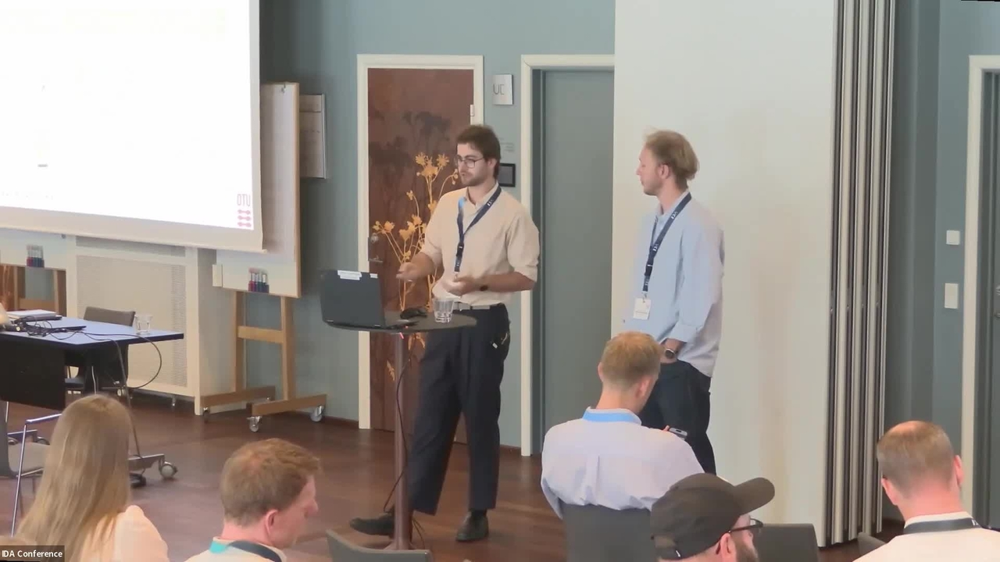
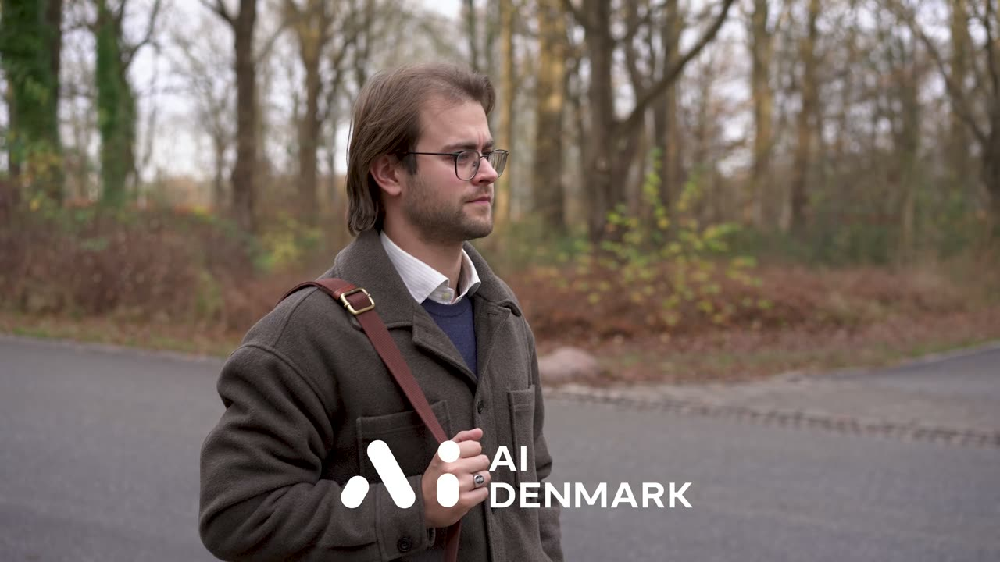
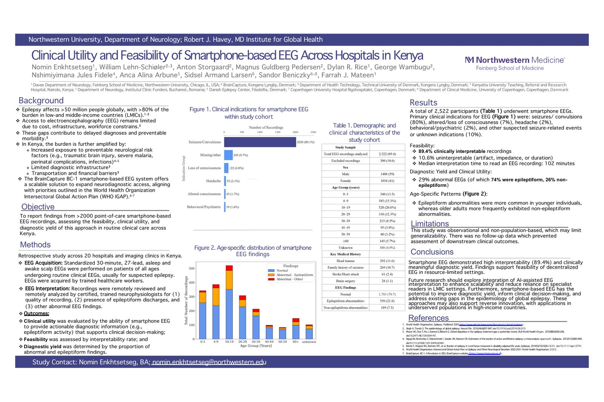
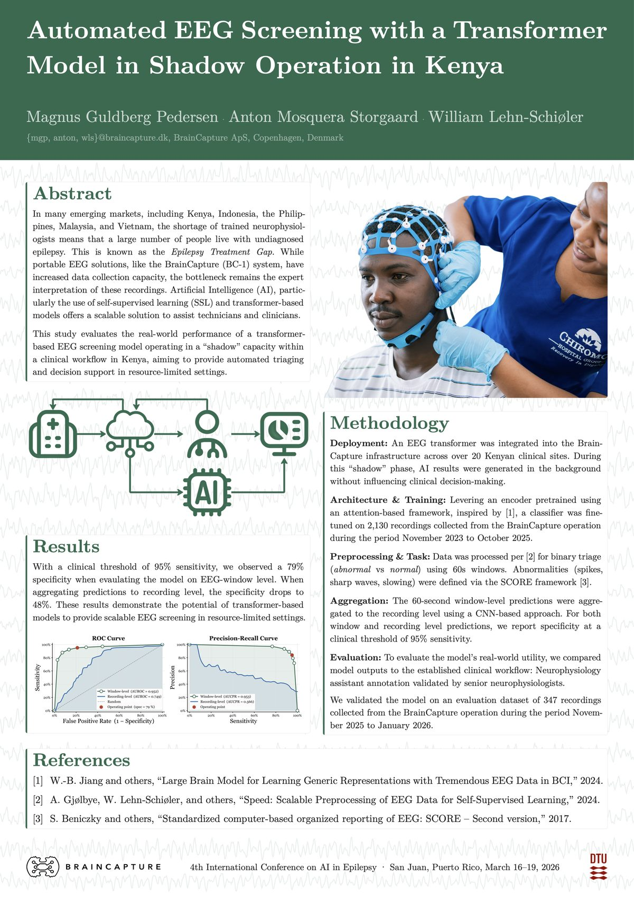
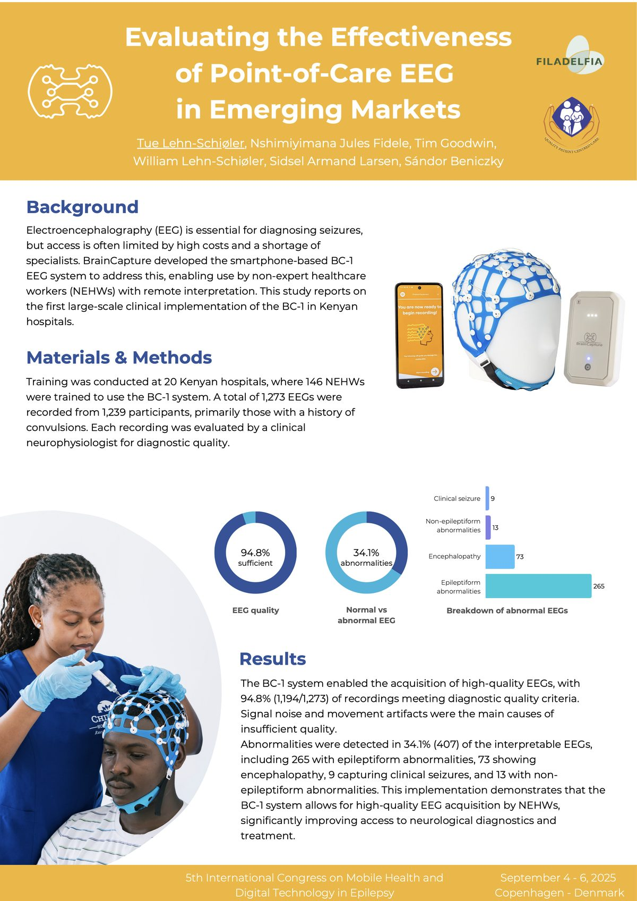
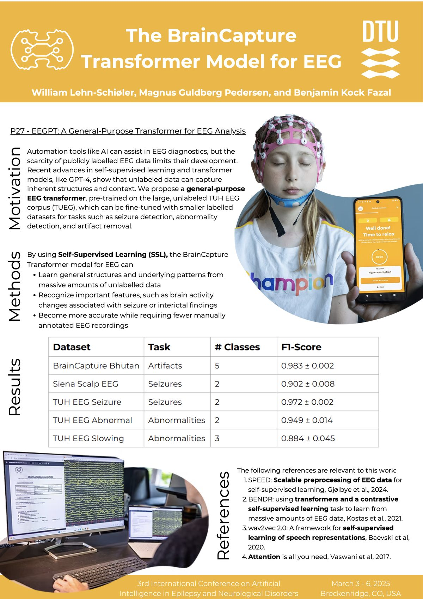
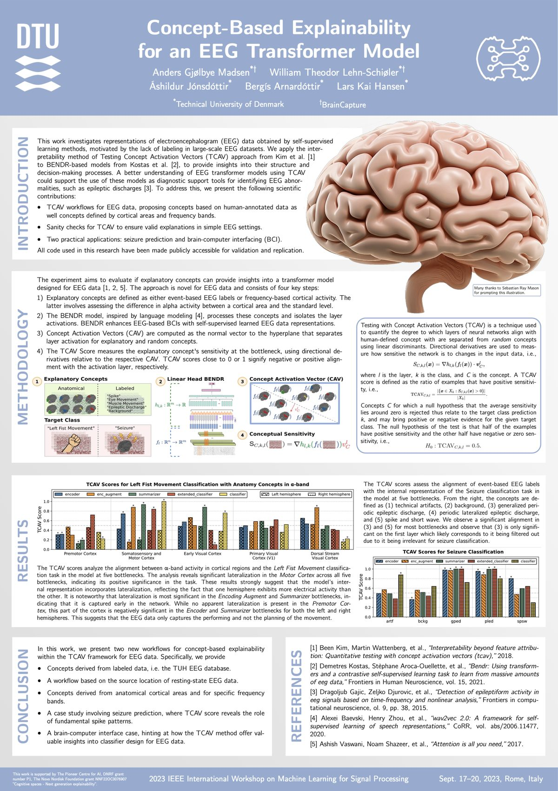

Scaling global neurodiagnostics: Self-supervised learning for point-of-care EEG
Talk · IDA Driving AI 2026 · May 2026 · With Magnus Guldberg Pedersen
Talks, films and conference posters on EEG foundation models, their interpretability, and point-of-care EEG.

Talk · IDA Driving AI 2026 · May 2026 · With Magnus Guldberg Pedersen

Feature · AI Denmark Summit 2025 · Dec 2025 · In Danish
AAN Annual Meeting · Chicago · Apr 2026

Epilepsy affects more than 50 million people, over 80% of them in low- and middle-income countries, where access to EEG is limited by cost, infrastructure and workforce. This retrospective study across 20 hospitals and imaging clinics in Kenya reports on 2,522 standardized 30-minute smartphone-based EEGs (BrainCapture BC-1), recorded by trained healthcare workers, mostly for seizures or convulsions, and reviewed remotely by certified neurophysiologists. 89.4% of recordings were clinically interpretable, and 29% were abnormal, of which 74% were epileptiform. Epileptiform abnormalities were more common in younger patients and non-epileptiform ones in older adults. The findings support the feasibility of decentralized EEG in resource-limited settings.
4th International Conference on AI in Epilepsy · San Juan, Puerto Rico · Mar 2026

In many emerging markets a shortage of trained neurophysiologists leaves many people with undiagnosed epilepsy. Portable EEG such as the BrainCapture BC-1 has increased recording capacity, but expert interpretation remains the bottleneck. We evaluate a transformer-based EEG screening model running in “shadow” operation across more than 20 Kenyan clinical sites, where results were generated in the background without influencing clinical decisions. The classifier, built on a pretrained encoder, was fine-tuned on 2,130 recordings and evaluated on 347 later recordings against the clinical workflow. At a clinical threshold of 95% sensitivity it reached 79% specificity on 60-second windows and 48% at recording level, showing the potential of transformer models for scalable EEG screening in resource-limited settings.
5th International Congress on Mobile Health and Digital Technology in Epilepsy · Copenhagen · Sep 2025

EEG is essential for diagnosing seizures, but access is often limited by high costs and a shortage of specialists. BrainCapture's smartphone-based BC-1 EEG system lets non-expert healthcare workers record EEG for remote interpretation. This study reports the first large-scale clinical implementation of the BC-1 in Kenyan hospitals: 146 healthcare workers at 20 hospitals recorded 1,273 EEGs from 1,239 participants. 94.8% of recordings met diagnostic quality criteria, and abnormalities were found in 34.1% of interpretable EEGs, including 265 with epileptiform abnormalities, 73 with encephalopathy and 9 clinical seizures.
3rd International Conference on Artificial Intelligence in Epilepsy and Neurological Disorders · Breckenridge, CO · Mar 2025

AI can assist EEG diagnostics, but the scarcity of publicly labelled EEG limits its development. We propose a general-purpose EEG transformer, pretrained with self-supervised learning on the large, unlabelled TUH EEG corpus, which can be fine-tuned on smaller labelled datasets for tasks such as seizure detection, abnormality detection and artifact removal, learning general structure from unlabelled data so that fewer manually annotated recordings are needed.
IEEE International Workshop on Machine Learning for Signal Processing (MLSP) · Rome · Sep 2023

We apply Testing with Concept Activation Vectors (TCAV) to BENDR-based EEG transformer models to understand their structure and decision-making. We propose TCAV workflows for EEG with concepts from human-annotated data, cortical areas and frequency bands, add sanity checks that make sure the explanations are valid in simple settings, and show two applications: seizure prediction and brain-computer interfacing.